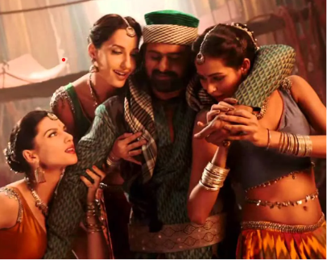

"Manohari" (lit. ' "Heart-stealing", also "Charming", "Delightful"') is an Indian Telugu-language item number from the 2014 soundtrack Baahubali:
The Beginning from the film of the same name. The song is sung by Mohana Bhogaraju and L. V. Revanth and has its lyrics written by Chaitanya Prasad.
The music video of the track features Prabhas, who plays Amarendra Baahubali,
disguised as a Middle Eastern Man dancing with Scarlett Mellish Wilson, Nora Fatehi and Madhu Sneha Upadhyay in cameo roles, while
Rana Daggubati as Bhallaladeva tries to catch the spy who was being followed by him and Amarendra Baahubali.
Director SS Rajamouli has a cameo role as the bartender during the premise of the song.
Nora Fatehi faced a wardrobe malfunction while shooting for the song.